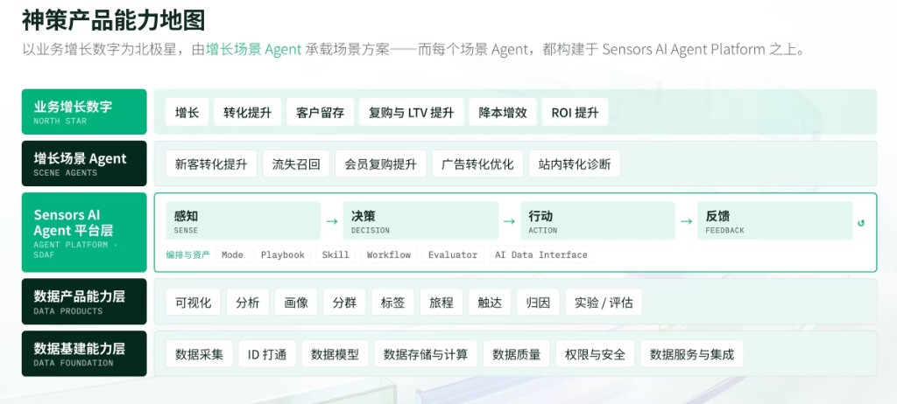
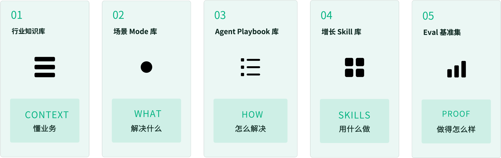
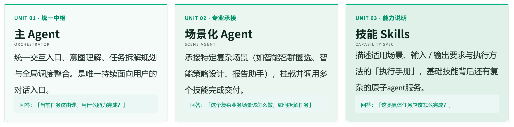
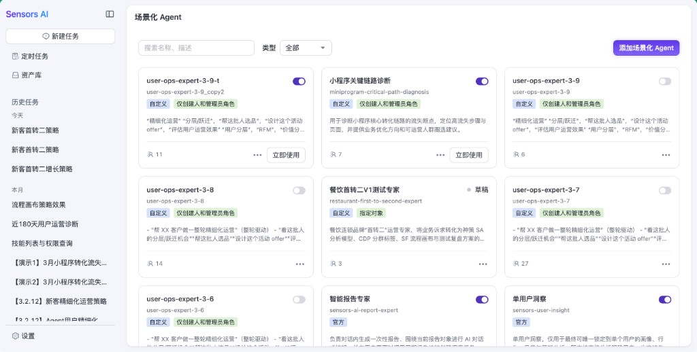
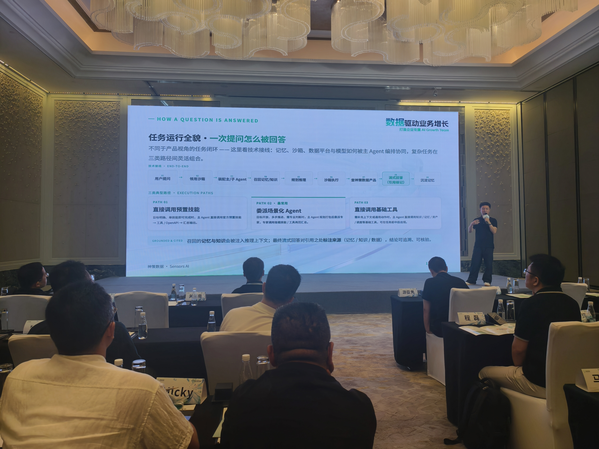
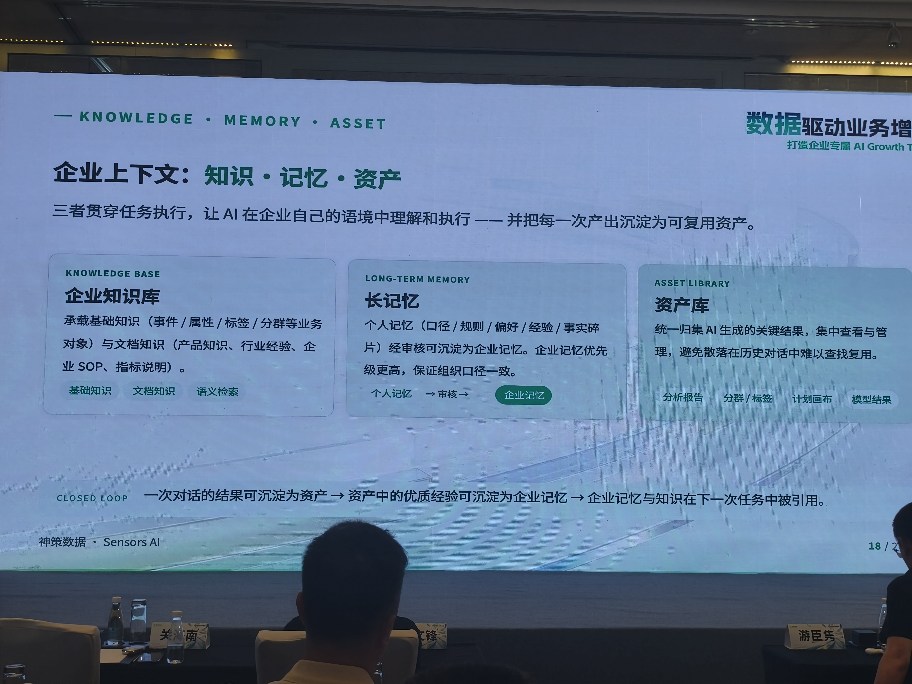
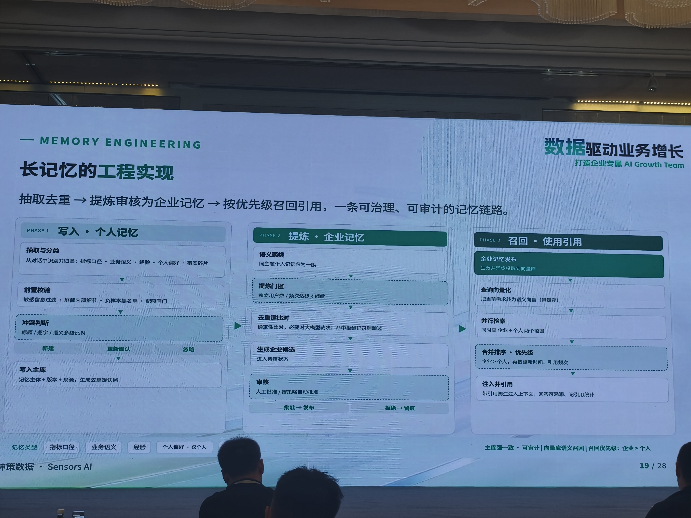
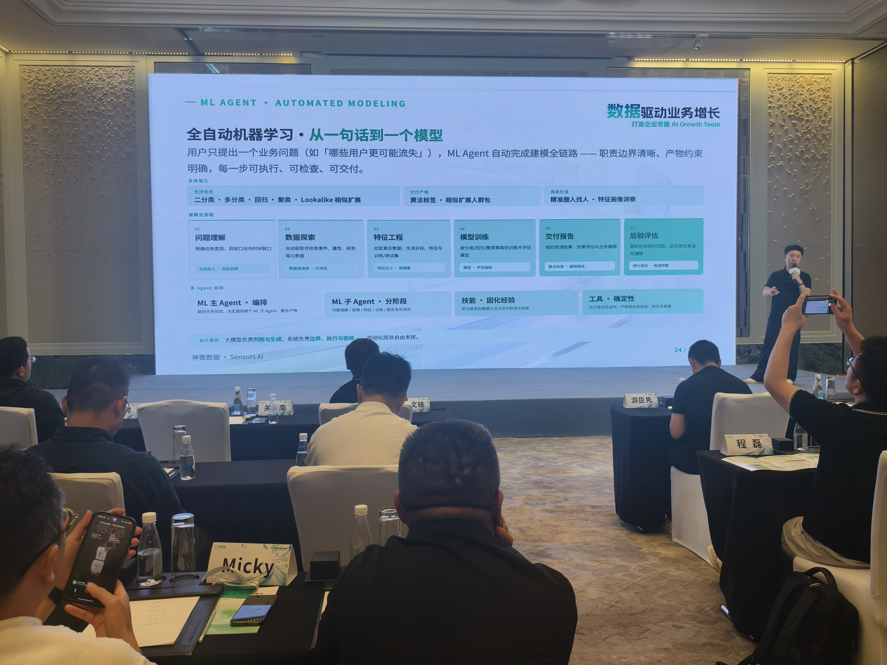

企业要的不是软件，而是一支 AI Growth Team
2026 年 7 月 10 日 Sensors AI 1.0 发布。对企业而言，真正需要的从来不是软件本身，而是增长。 AI 不会只是让软件多一个对话入口，而会推动企业从「使用软件」走向「雇佣增长团队」； 神策也不再只是交付软件，而是从交付软件走向交付工作量，并最终走向交付结果。
数据驱动，不是增长的充分条件
使命没变，但对「数据如何真正创造业务增长」的理解在迭代。
2015：先解决数据源与 Event-User 模型，重构数据根基，企业能够采集数据、分析数据、建设标签体系，并将数据接入运营流程。围绕分析、画像、标签、分群、运营计划、营销画布等场景，企业已经具备了更完整的数据工具体系。2020：进入营销云，提出 SDAF（感知—决策—行动—反馈），让数据从「被看见」走向「被使用」。
当时相信「完整闭环 → 增长自然发生」。实践却表明：数据驱动更像放大器——能放大正确策略，也可能放大不成熟策略。企业真正关心的是用户是否增长、转化是否提升、复购是否改善。
企业不缺增长想法，缺的是持续运行的增长工作流
企业内部往往已有判断与有效策略，但因人力、排期、跨团队协同，很多动作难长期、稳定、成体系地跑起来：知道该做什么却做不持续；知道有效却难复制；跑通过却沉淀不成组织能力。
神策要解决的，不是替代业务判断，而是把客户业务经验 + 神策数据能力 + AI Agent 执行力结合起来，让「已知但尚未持续落地」的增长工作流真正跑起来。

产品能力地图：增长数字为北极星 → 场景 Agent 承载方案 → Sensors AI 平台（感知→决策→行动→反馈）→ 数据产品 → 数据基建。
增长也能「自动驾驶」：L2 → L4，交付软件 → 工作量 → 结果
Copilot 辅助
AI 给建议，人判断并执行
AI 主导部分任务
当前重点：AI 推进，关键节点人确认（国内成熟业态优先）
限定场景端到端
三年方向：人定目标与边界，AI 自主完成可复用增长工作
交付软件
把工具交给客户，能力依赖客户自己的团队
交付工作量
Agent 替客户完成分析、圈人、策略、配置、追踪、复盘
交付结果
进一步对增长结果负责，按效果衡量价值
AI 不是对话入口，而是增长工作流的重构
ChatBI / Copilot / 通用 Agent 平台很多，但对增长而言，仅回答问题远远不够。增长是围绕目标持续运行的完整工作流：目标设定、诊断、分析、策略、执行、评估、优化。
| 对比 | 人工 SDAF / 对话框 | AI Growth Workflow |
|---|---|---|
| 推动力 | 专家接力，门槛高、难持续复制 | 场景化 Agent 从目标出发持续编排 |
| 形态 | 短问答、文本建议 | 分析→策略→执行→复盘闭环 |
| 创造性 | 全靠人脑 token | 可选择何时用人脑、何时用模型 token |
| 价值 | GUI 换成 LUI 往往只是交互升级 | 把做不起来/做不持续的工作流真正建起来 |
真正能上岗的 Agent：三大核心支柱
① 完整 AI Growth Workflow
覆盖目标—分析—策略—执行—复盘。先把「已知但未持续做好」的工作流跑起来；再随场景积累发现未知增长机会。
② 真实执行力 · Skills
CDP / CJA / CJO 经 OpenAPI 封装为增长 Skill。Agent 不只会「说」，还能查数、圈人、生成策略、编排触达、追效果。
③ 理解客户 · CWM
从给人用的 CDP 走向给 Agent 用的 Customer World Model：业务知识、运营经验、成败案例与行为预测，都要能被 Agent 理解。
配套角色 Growth Agent Builder（GAB）：一端理解业务并抽象场景，一端在平台上落地为可运行、可优化的增长 Agent——输出从 PPT/陪跑，转向可持续运行的增长智能体。
把增长经验变成智能资产：五库 + 三层核心单元
相对通用大模型的「生成」，更显著的优势是 2500+ 客户实践沉淀为可复用资产体系。

01 行业知识库 CONTEXT 懂业务 · 02 场景 Mode WHAT 解决什么 · 03 Playbook HOW 怎么解决 · 04 Skill 用什么做 · 05 Eval 做得怎么样。

主 Agent（统一中枢）调度场景化 Agent（专业承接），场景 Agent 挂载 Skills（执行手册/原子能力）完成交付。

产品侧：官方 + 自定义场景 Agent；资产库 / 定时任务 / 历史任务承接沉淀与复用。
一个经营任务如何被执行：产品八环节 × 技术接线
同一件事有两套视角：产品视角讲「经营任务怎么闭环」；技术视角讲「一次提问里，记忆、沙箱、数据平台与模型如何被主 Agent 编排」。 后者即现场页《任务运行全貌 · 一次提问怎么被回答》——复杂任务还会在三类路径间灵活组合。
一、产品视角：经营任务的八环节
从用户提出业务目标到结果沉淀，通常经过「理解与规划 → 调度与执行 → 交付与沉淀」三阶段；关键决策（预算、触达、发布等）保留人工确认。
理解与规划（01–03）
- 自然语言表达经营目标
- 识别业务上下文与所需能力
- 复杂任务生成结构化待办/计划，可按中间结果动态增删步骤
调度执行与沉淀（04–08）
- 交给合适的场景 Agent，调用技能推进
- 进度、依据、引用全程可见
- 关键节点人审；报告/分群/画布等写入资产库，经验可再进记忆
二、技术视角：一次提问怎么被回答（E2E）
产品八环节描述的是「经营动作长什么样」；下面这条技术链路描述的是「系统内部怎么接线」—— 主 Agent 统一编排记忆、沙箱、神策数据产品与大模型，保证可执行、可引用、可沉淀。

现场架构页：TECHNICAL THREAD · END-TO-END；下方三类典型路径；底部 GROUNDED & CITED。
01–03 · 进场与装配
- 用户提问：自然语言进入统一入口
- 启用沙箱：复杂任务先隔离运行环境（安全、出网、依赖可控）
- 调配主/子 Agent：主 Agent 判断是否自办、委派场景 Agent 或挂子 Agent
04–06 · 推理与执行
- 召回记忆/知识：注入口径、规则、行业知识、会话经验
- 规划推理：拆步骤、选路径、决定调什么能力
- 沙箱执行：生成并运行查询/脚本/中间计算，过程可审计
07–08 · 取数与输出
- 查询神策数据产品：分析模型、标签分群、画布等，经 OpenAPI/工具真实取数
- 流式回答（引用标记）：边生成边标注来自记忆/知识/数据的引用
09 · 沉淀
- 沉淀记忆：可复用的口径、偏好、确认过的定义写回记忆体系
- 高质量产物还可进入资产库，供后续任务直接引用
三、三类典型路径（复杂任务可组合）
主 Agent 不会只走一条死流程：按目标是否清晰、是否需要多步专家闭环，在路径间灵活切换甚至穿插。
PATH 01 · 直调预置技能
何时：目标明确、单步/短链路即可完成。
怎么走：主 Agent → 官方预置 Skill → Tools/OpenAPI → 汇总输出。适合「一句话查指标 / 建标签」这类硬任务。
PATH 02 · 委派场景 Agent（最常用）
何时：目标开放、多步推进、需要专业判断与行业方法。
怎么走：主 Agent 规划后委派场景专家（策略/报告/深度分析等）→ 专家再挂载多项技能与工具闭环交付。增长类经营任务多数走这里。
PATH 03 · 直调基础工具
何时：需要补上下文、局部协同，而非完整业务场景。
怎么走：主 Agent 直接调知识检索、记忆、资产、定时调度等；常嵌在路径 1/2 的任意阶段反复出现。
企业上下文：知识 · 记忆 · 资产，以及记忆工程
不追求开箱极聪明，而追求随时间复利：会话产物沉淀为资产，优质经验进入企业记忆，下一轮任务再被引用。

知识库（基础对象 + 文档知识 + 语义检索）· 长记忆（个人→审核→企业，企业优先）· 资产库（报告/分群标签/画布/模型结果）。

写入个人记忆（抽取分类 / 校验 / 冲突判断）→ 提炼企业记忆（聚类 / 门槛 / 审核发布）→ 召回使用（企业>个人优先级，注入并引用可追溯）。主库强一致可审计 + 向量语义召回。
工程化底座：六层架构决定「能不能上路」
企业级 Agent 的差距不在模型口号，而在工程化：把模型变成可执行、可信、可控的生产力。主 Agent 为中枢，向上接目标，向下调度场景、技能、工具与神策底座。
知识与上下文
- 知识库
- 长短记忆
- 资产库
- 历史会话
Guardrails
- 权限审计溯源
- 人机协同
- 消耗与边界
模型分级调度
规划/仲裁用 thinking；加载执行用 flash/lite；确定性动作走规则与代码。
沙箱 + 预热池
代码隔离、可复现、可审计；预热依赖包实现秒级启动。
「算得准」举例：指标分析与全自动 ML
设计原则：大模型负责判断与生成；系统负责边界、执行与验收——自动化，而不是自由发挥。

指标分析：自然语言 → 加载上下文 → 双路检索 → 可信度仲裁 → 生成查询参数 → 查神策产品 → 结果自检 → 结论+引用。不猜字段、不乱口径，不确定就澄清并写入记忆。

ML Agent：问题理解→数据探索→特征工程→模型训练→交付报告→后验评估。ML 主 Agent 编排，子 Agent 分阶段执行，Skills 固化方法论，Tools 保证确定性产物。
安全是入场券，结语：打造企业自己的 AI Growth Team
安全可控
关键动作人审；权限不可旁路神策体系；过程可审计；敏感数据可屏蔽。安全不是加分项，是进入经营主流程的前提。
战略递进
2015 数据根基 → 2020 数据闭环 → 今天 AI Growth Team。不是简单产品升级，而是产品战略与交付方式的升级。
本地页：Sensors-AI-整体技术架构.html · 刷新 127.0.0.1:5501 即可查看